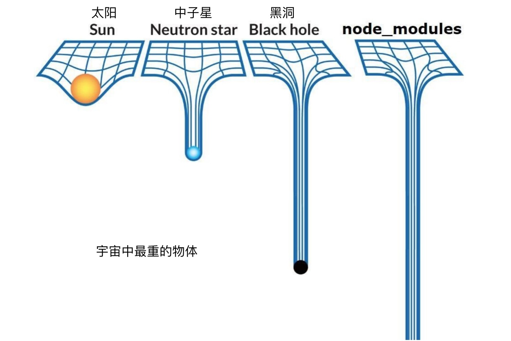

Node.js 环境
Node.js 简介
Node.js（Ryan Dahl，2009）[1, 2] 是一个在 Google Chrome 浏览器使用的 V8 引擎的基础上开发出来的跨平台的 JavaScript 运行时环境。Node.js 使用了事件驱动、非阻塞 I/O 模型。其中非阻塞 I/O 机制在不同的系统上采取了不同的库来实现：Windows 使用了 IOCP，Linux 下使用 epoll，Mac 系统下则使用了 kqueue。
在过去的8年里，Node.js 及其生态圈的发展可以用突飞猛进、日新月日来形容。前端开发者通常用 Node.js 来进行文件构建（例如 gulp、webpack 一类的构建工具）、提供页面服务（例如 express.js、koa.js 这样的服务器端框架），或者写一些网络、计算类的程序（例如爬虫）。
用 NVM 管理 Node.js
我们可以直接下载安装 Node.js，这样的话操作系统里共用一个 Node.js 程序。但是 Node.js 社区异常活跃，其开发迭代的速度非常快，更好的方式是使用 NVM（Node.js Version Manager，Node 版本管理工具，作者是 Tim Caswell） 来管理系统里的 Node.js，可以同时安装任意多个版本，然后在使用时指定需要的 Node.js 版本即可。可以下载并执行其 Github 仓库里的 install.sh 脚本来安装 NVM （可以在其官网上找到具体的命令，地址：https://github.com/creationix/nvm）：
# 这个命令的意思是，从该网址下载文本内容，然后将内容交给 bash 去运行
curl -o- https://raw.githubusercontent.com/creationix/nvm/v0.33.8/install.sh | bash
安装好 NVM 后，就可以方便地使用 nvm 命令安装或切换当前会话使用的 Node.js 版本。NVM 的常用命令：
# 从服务器查询目前所有可安装的 Node 版本
nvm ls-remote
# 查看当前安装的 nvm 程序的版本，如果安装正确，会打印 0.33.8
$ nvm --version
# 下载并安装某个版本的 Node.js
$ nvm install 9.7.0
# 查看当前系统已安装的所有 Node.js 版本
$ nvm ls
# 在当前的会话中，使用某个已安装了的 Node.js 版本
$ nvm use 9.7.0
# 查看当前所用 Node 版本
nvm current
# 设置默认的 Node 版本。这个命令会在 /.nvm/alias/default 文件中写入默认的 Node 版本号
nvm alias default 9.7.0
# 如果某个版本的 Node 因为太古老等原因，你不再使用它，可以这样卸载掉
nvm uninstall 0.10
NVM 工作原理
安装 NVM 时，install.sh 脚本实际上会将 NVM 的代码仓库下载到 ~/.nvm 目录，然后在配置文件（~/.bash_profile，~/.zshrc，~/.profile，或者 ~/.bashrc）里添加下面的启动脚本：
export NVM_DIR="$HOME/.nvm"
[ -s "$NVM_DIR/nvm.sh" ] && \. "$NVM_DIR/nvm.sh" # This loads nvm
NVM 实际上是一系列 shell 脚本的集合。
.nvmrc描述文件
在项目的根目录下，可以通过 .nvmrc 文件来指定当前项目希望使用的 Node.js 版本。例如：
# 在项目的根目录下运行
$ echo "9.7.0" > .nvmrc
$ nvm use
Found '/path/to/project/.nvmrc' with with version <9.7.0>
Now using node v9.7.0 (npm v5.6.0)
给项目设置 .nvmrc 文件可以避免很多麻烦，例如多人协作时 Node 版本不一致、依赖的某些全局包在切换 Node 版本时不存在等等问题。
nvm 的更多用法可以参考其官网[3]，或者运行 man nvm 来获得帮助。
NPM - Node.js 包管理工具
NPM 全称为 Node.js Package Manager，即 Node.js 的包管理工具。现在对其更准确的描述是 JavaScript 包管理器。NPM 已然是世界上最大的开源软件注册社区之一[4]。
国内镜像加速
因为 npmjs.org 服务器是在国外，因此在国内直接使用 npm install 的话通常会比较慢。使用国内的镜像可以加速下载包的速度，例如常见的淘宝镜像[5]。可以在 ~/.zshrc 文件里添加下面的配置，这样在系统任何位置使用 cnpm 命令安装、更新 npm 包的时候，请求的服务器就是淘宝的镜像服务器了。
# 在 `~/.zshrc` 文件里添加 cnpm 别名
alias cnpm="npm --registry=https://registry.npm.taobao.org \
--cache=$HOME/.npm/.cache/cnpm \
--disturl=https://npm.taobao.org/dist \
--userconfig=$HOME/.cnpmrc"
锁定包版本
由于每个包的多个版本之间可能存在较大的兼容性问题，一些稳定的线上项目会希望其所使用的包的版本是固定的，不会因为包的发布者发布新包而导致项目出现问题。NPM 最初的解决方案是 shrinkwrap，即由开发人员手动执行：
$ npm shrinkwrap
该命令会根据根目录下的 package.json 文件和 node_modules 里已装包的版本、地址等信息生成一个描述当前所用包版本的描述文件 npm-shrinkwrap.json。NPM 发展到版本5之后，参考了 yarn 工具，也实现了自动生成、修改 package-lock.json 文件的功能。
如果目录中同时存在 npm-shrinkwrap.json 和 package-lock.json 文件，那么后者将被忽视。
一些常用命令
# 安装某个包，并将其作为 devDependencies 依赖记录到 package.json 里
$ npm install <package-name> --save-dev
# 卸载某个包
$ npm uninstall <package-name>
# 与远程镜像进行版本对比，列出过期的包
$ npm outdated
# 列出全局安装了的包，只搜索第一级
$ npm ls -g --depth=0
/Users/wzl/.nvm/versions/node/v9.7.0/lib
├── gitbook-cli@2.3.2
└── npm@5.6.0
scripts
大部分前端项目都会有一份 package.json 文件，可以在里面声明项目名称、版本、作者、依赖、执行命令以及授权协议信息等。其中 scripts 字段用于自定义或者调用一些预定义的命令。
预定义命令
在 package.json 所在目录运行 npm 相关命令时，会触发许多类似于“NPM生命周期”的事件，例如：
install,postinstall，当前项目被作为其他包的依赖被安装后，运行此字段定义的命令preinstall，在本地装包之前执行
更多定义可以在 npm 文档[10]里找到。
自定义命令
NPX
NPM 5.2 及之后的版本会随之携带一个新的工具 npx，这个工具的主要作用是运行局部而非全局的包（例如gulp）。在 npx 之前，如果要运行局部安装的 gulp 工具，有两个方法：一是在 package.json 文件的 scripts 里声明一个命令，例如：
# package.json
"scripts": {
"gulp": "gulp"
}
# 使用时
$ npm run gulp
另外一个方法是访问局部包里的二进制文件：
$ ./node_modules/.bin/gulp
如果不想像上面这样使用，那就只好全局安装 gulp。但这样一来无法保证全局的版本能够与多个项目期望使用的 gulp 版本兼容。
NPX 应运而生。有了它以后，如果想运行局部安装的 gulp 包，这样就可以：
$ npx gulp
此外，如果你在任何目录下，想运行一个通常情况下需要全局安装的包来做一些事情（好比创建一些目录结构），但又不想全局安装这个包，那么 npx 也派上用场了。例如 React 的脚手架 create-react-app，使用 npx，就不需要全局安装任何东西，执行：
$ npx create-react-app my-app
npx 会自动下载 create-react-app 然后调用它，调用结束后再将其从系统中移除。
其他包管理器
yarn
NPM 并非唯一的 Node.js 包管理器，Facebook、Exponent、Google 与 Tilde 四家公司在 2016 年 11 月联合推出的 Yarn[6] 也是一款优秀的同类型开源工具。Yarn 会优先从本地的离线镜像（offline mirror）中获取包，并且采用多线程下载，因而相比传统的 npm 会有更快的速度。
Mac 下可以通过 Homebrew 执行 brew install yarn 进行安装。官方还推荐通过下载其安装脚本的方式进行安装：
$ curl --compressed -o- -L https://yarnpkg.com/install.sh | bash
Node.js 的设计缺陷
2018年6月，Ryan Dahl 在柏林举办的欧洲 JavaScript 开发者大会上进行了主题为《Design Mistakes in Node》[7]的演讲，列举了自己认为 Node.js 的一些设计缺陷。总体而言，Node.js 早期的设计重心在于事件循环与异步I/O，并且解决得很不错。但是仍然遗留了其他方面的缺陷，主要是与“模块”“包”“依赖”等代码组织方式有关的，它们不约而同地导致了 Node.js 生态的一些混乱，提升了代码组织的复杂度，例如：
- 没有坚定地在 Node 里支持
Promise。Ryan 在2009年在 Node.js 里加入了Promise，但是在2010年又将其移除。Promise是async/await的必要抽象基础，它在 Node 里的天然缺失，导致了各种设计糟糕的异步 API，开发者们也一度很难组织好异步代码。 - 安全性。代码检查器（linter）不应该具备完整的对电脑和网络的访问权限。例如，著名的 JavaScript 代码检查工具 ESLint 在 2018 年曾被黑客攻击，造成了比较严重的安全问题。黑客正是利用了 npm 包具有对网络的访问权限这一特点，植入了可以获取用户隐私数据并上报到某个特定网站的恶意代码。[8,9]
- 构建系统（GYP）。Chrome 的 V8 最开始使用了 GYP 作为项目文件生成工具，因此 Node 直接借鉴了它。后来 Chrome 抛弃了 GYP，转而使用 GN，于是 Node 成为了 GYP 的唯一用户……此外，Node 允许用户直接写 V8 的扩展，这产生了一些不安全因素。更好的方式是提供 FFI（Foreign Function Interface，跨语言函数调用接口）。
package.json：Node 把 NPM 加入到其核心代码中后，NPM 便成为了 Node 事实上的包管理标准。require('someModule')会寻找package.json里的main字段作为包的入口。但是这样的声明并不足够明确。package.json也携带了大量不必要的信息：条款，仓库地址，描述，版本……如果require()仅支持文件路径或者 URL，那么版本由路径或URL唯一确定，也就不需要列上一堆依赖了。require的参数过于宽松。Node 支持直接书写require("module")而不必填写后缀.js。看起来似乎显得强大，但是这意味着 Node 要去做多次文件查找才能最终确定要加载的文件。浏览器则没有这种不确定性（<script>元素的src里不能省略.js后缀）。此外，默认index.js为模块的入口，也是很没有必要的，因为已经支持在package.json中通过指定main字段作为模块入口了。node_modules方案的设计不够完善。
